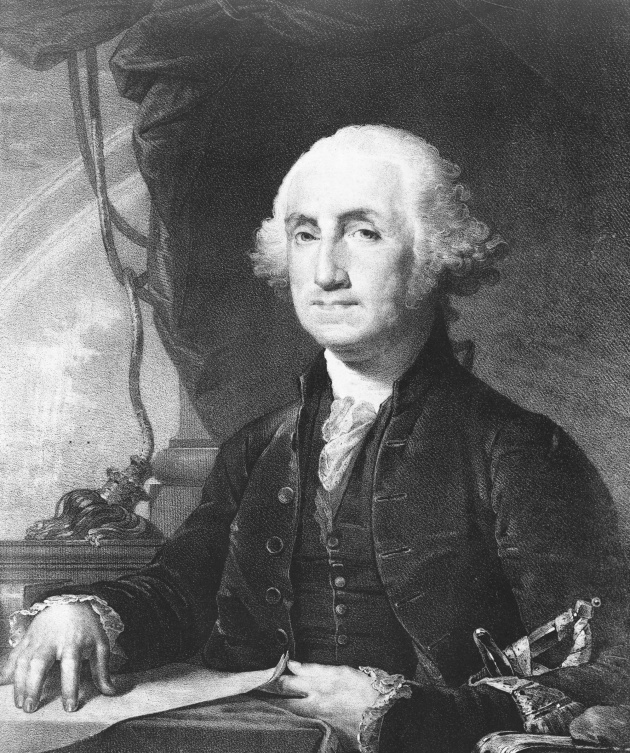
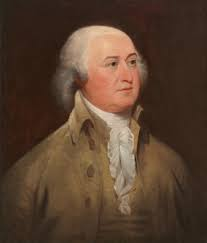
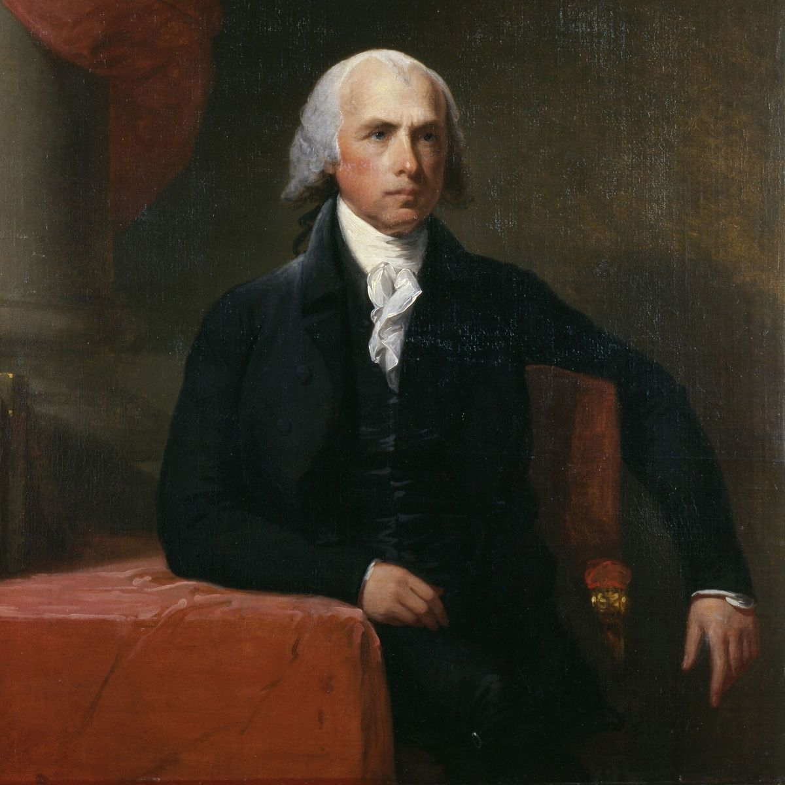
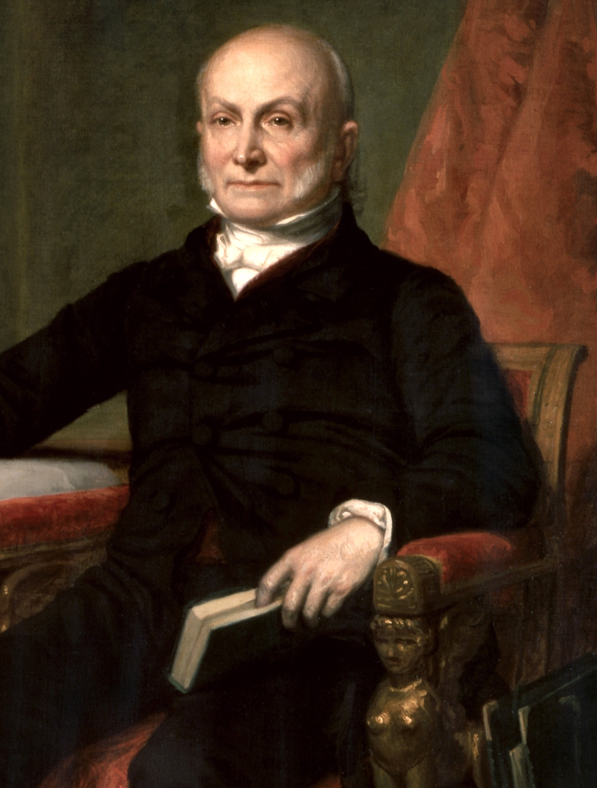
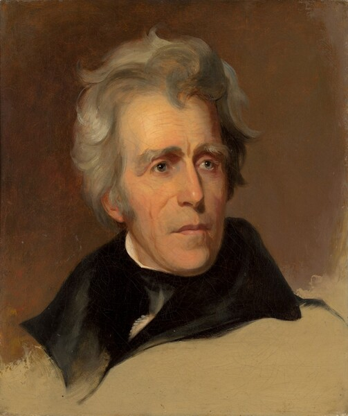
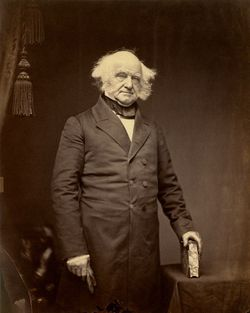
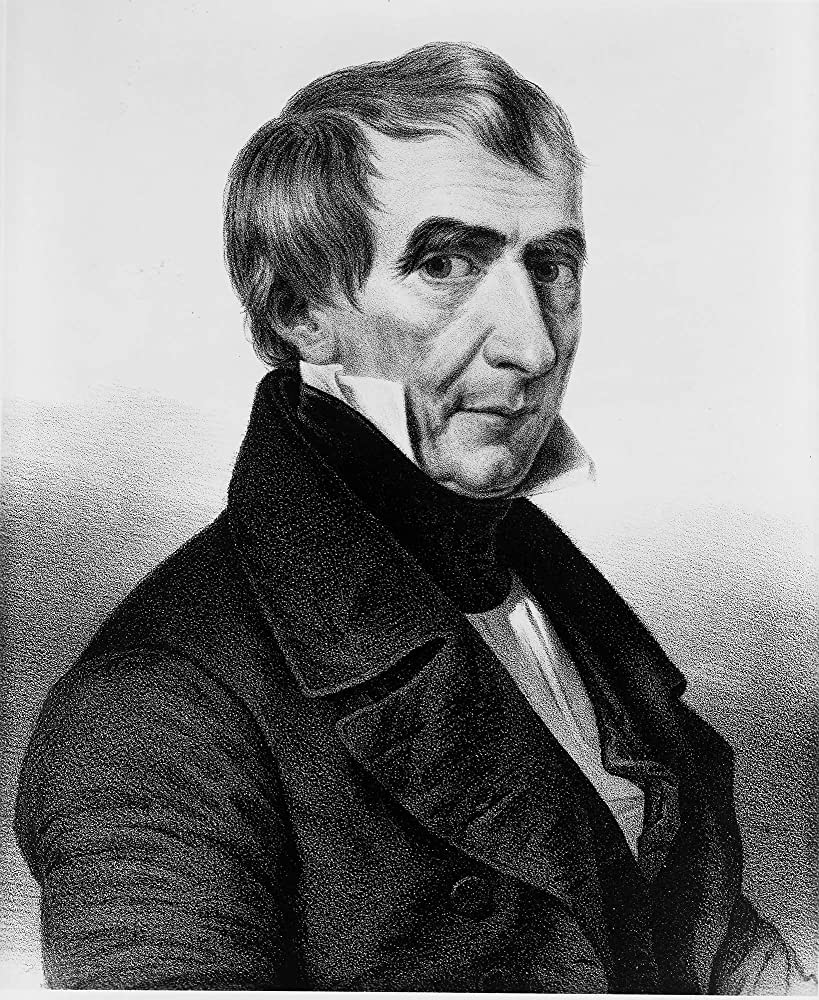
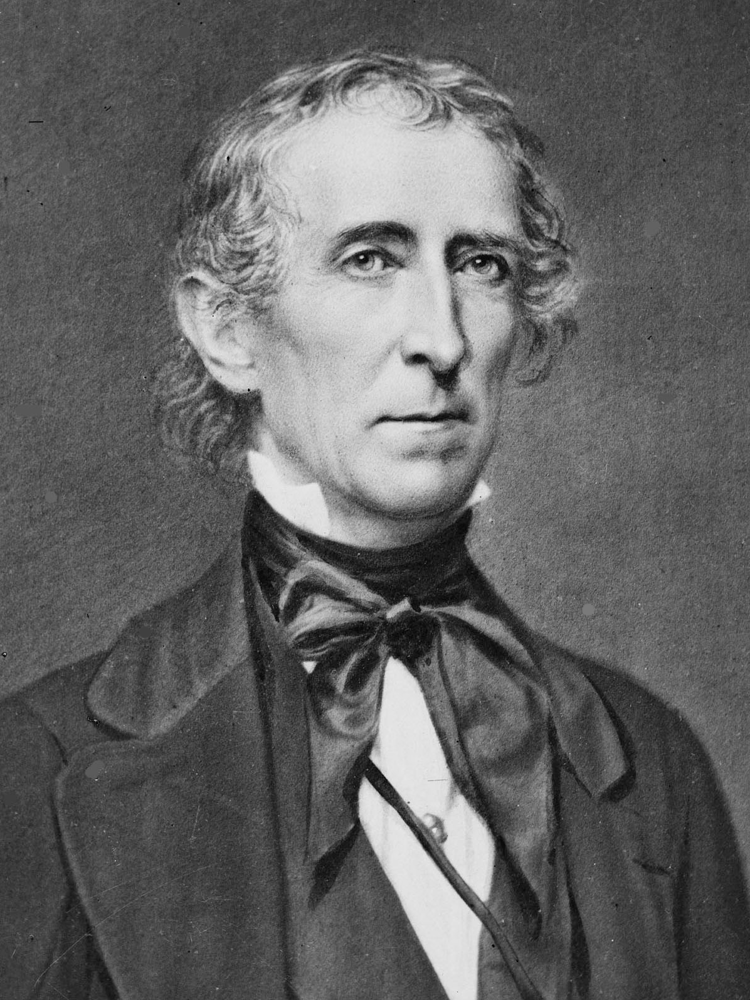

| 1 |
 |
George Washington |
(1789 - 1797) |
Did not belong to a political party. |
He overseed the meeting that wrote the US Constitution. |
| 2 |
 |
John Adams |
(1797 - 1801) |
Federalist Party |
He led the movement of Independence. |
| 3 |
 |
Thomas Jefferson |
(1801 - 1809) |
Democratic-Republican Party |
One of the most important authors of the Declaration of Independence. |
| 4 |
 |
James Madison |
(1809 - 1817) |
Democratic-Republican Party |
He wrote the Federalist Papers to the ratification of the Constitution. |
| 5 |
 |
James Monroe |
(1817 - 1825) |
Democratic-Republican Party |
He participated in the negotiation of the Louisiana Purchase. |
| 6 |
 |
John Quincy Adams |
(1825 - 1829) |
Democratic-Republican Party |
He broke down for the 185 miles C & O Canal. |
| 7 |
 |
Andrew Jackson |
(1829 - 1837) |
Democratic Party |
He enlarges the American territory, built-up a relationship with other nations around the globe, and he establish the bases for democracy. |
| 8 |
 |
Martin Van Buren |
(1837 - 1841) |
Democratic Party |
He participated in the struggle for the independence of the treasury system for the management of government transactions. |
| 9 |
 |
William Henry Harrison |
(1841) |
Whig Party |
He helped obtain a law to divide the Northwest Territory and Indiana. |
| 10 |
 |
John Tyler |
(1841 - 1845) |
Whig Party |
In 1842 Tyler did sign a tariff bill protecting northern manufacturers. The Webster-Ashburton treaty ended a Canadian boundary dispute. |